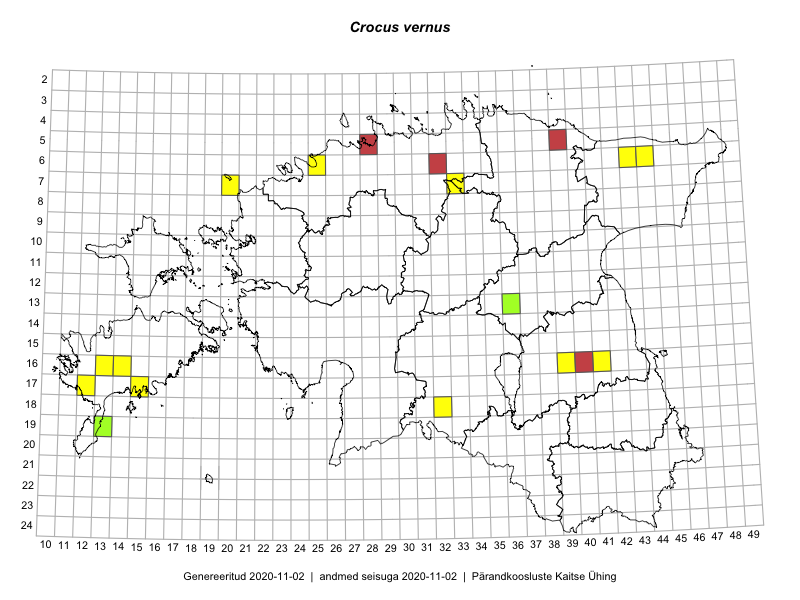

Crocus vernus
Uuendatud: 2016-12-02
Kaardile koondatud taksonid: Crocus vernus (L.) Hill

Kaart põhineb 9 vaatlusel. Taksonit on leitud 9 ruudust.
Viited andmebaasikirjetele
- Jana-Maria Habicht, Ester Valdvee: 2015-05-01: 07-33: GPS punkt
- Jana-Maria Habicht: 2015-04-25: 06-25: GPS punkt
- Sirje Azarov, Aira Alasi: 2015-05-01: 16-14: GPS punkt
- Karin Kikas, Elle Rajandu: 2015-04-21: 16-39: ala
- Karin Kikas, Elle Rajandu: 2015-04-23: 16-41: GPS punkt
- Meeli Mesipuu, Liina Oja: 2015-04-26: 06-43: GPS punkt
- Mari Reitalu, Triin Reitalu: 2015-04-12: 16-13: GPS punkt
- Mari Reitalu: 2015-04-05: 17-12: GPS punkt
- Meeli Mesipuu, Liina Oja: 2015-04-25: 06-44: GPS punkt